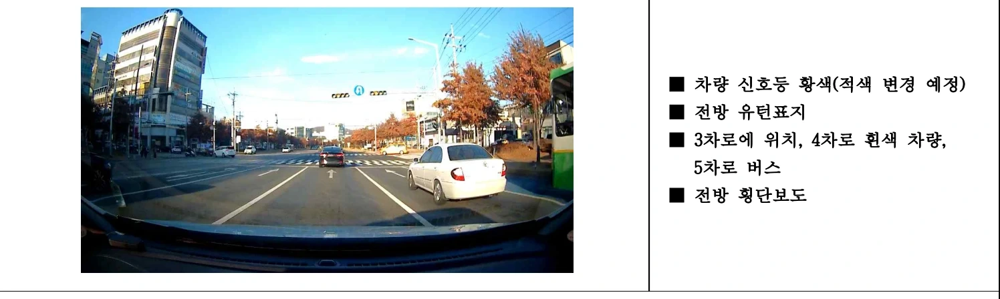

700. 在以下情况中，最安全的两种驾驶方法是？

- ①前方车辆信号为黄灯，所以缓慢减速，在停止线前停车。
- ②确认1、2车道后方无跟随车辆时，可变道到第1车道掉头
- ③侧车道（4、5车道）有白色车辆和公交车，所以应先放行再变道右转
- ④白色实线区域不得变道。
- ⑤前方车辆信号为黄灯，因此加速跟随前车通过路口。
查看答案
答案
① 前方车辆信号为黄灯，所以缓慢减速，在停止线前停车。
④ 白色实线区域不得变道。
依据
所有驾驶者必须遵守交通安全标志及信号的指示（道路交通法第五条）。黄灯时，车马必须在停止线、人行横道前或十字路口前停车，即使部分车马已进入十字路口，也必须迅速驶出十字路口（《道路交通法施行细则》【附录2】）。此外，白实线路段禁止变道，试图变道掉头或右转是违法的，是危险的驾驶行为。选项 ⑤ 忽略黄色信号并加快速度通过路口。这不仅违法，而且还可能导致重大交通事故，因为十字路口内的碰撞事故很高。
依据文字为学习用机器翻译。